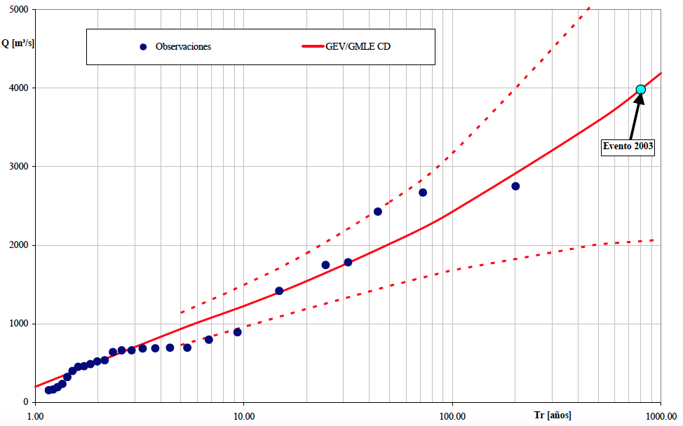
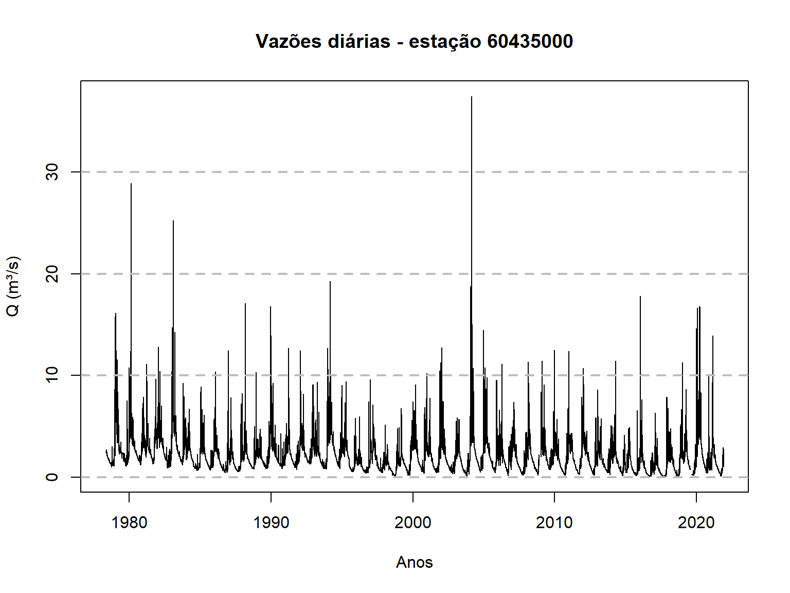
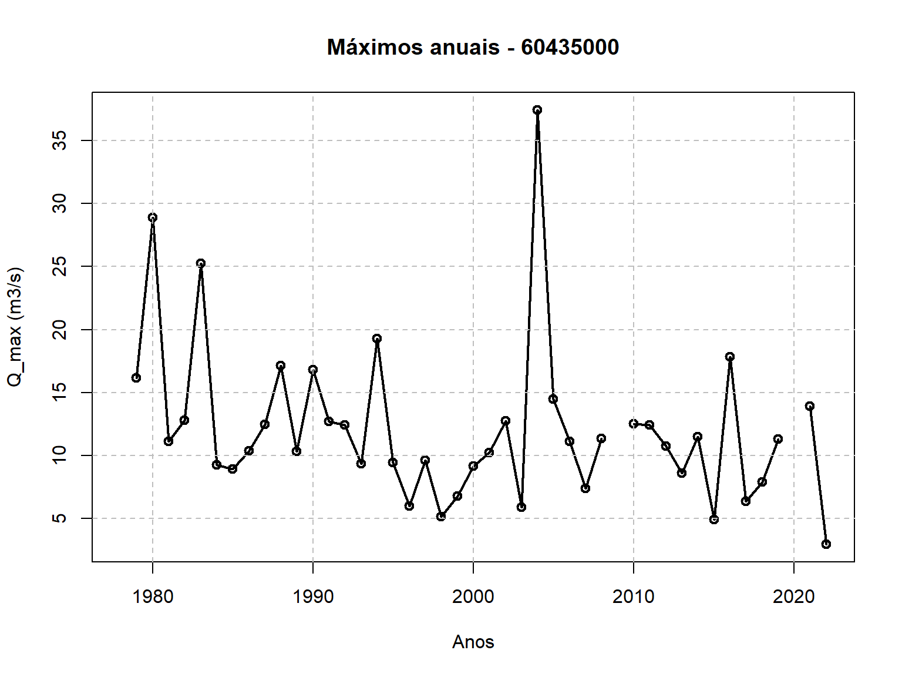
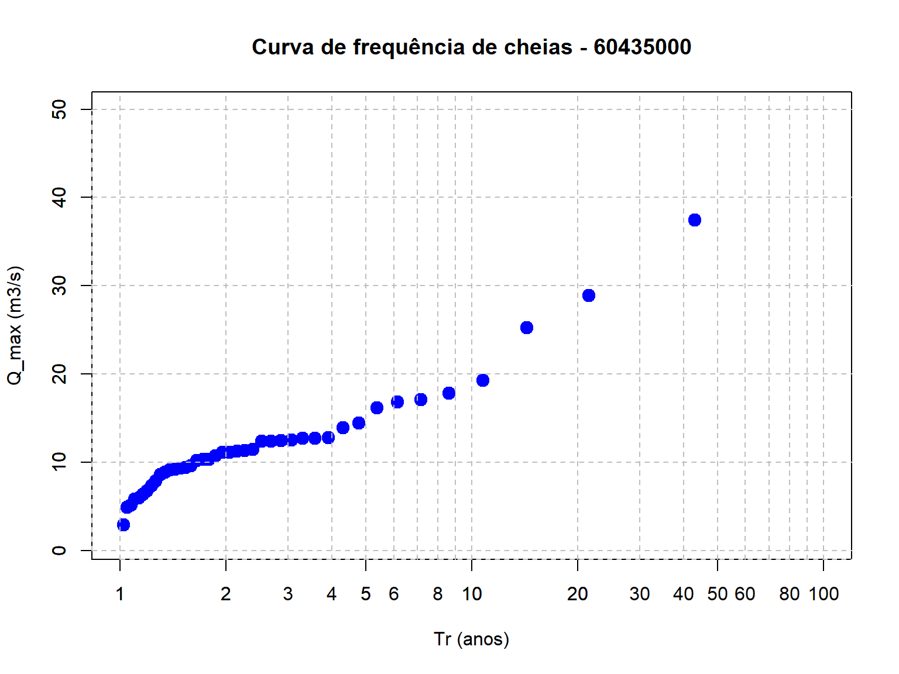
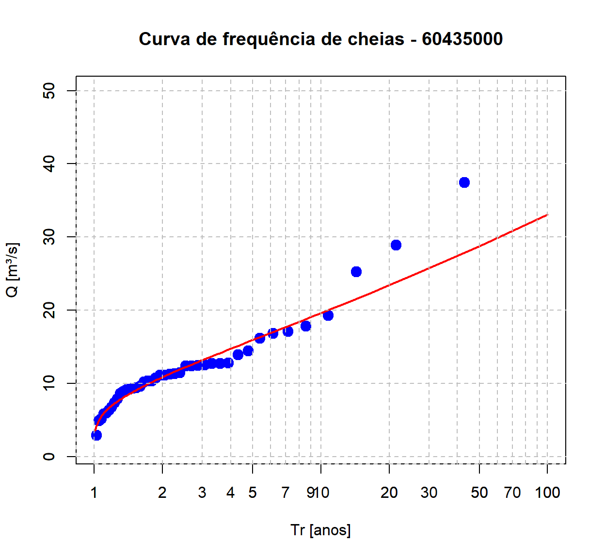
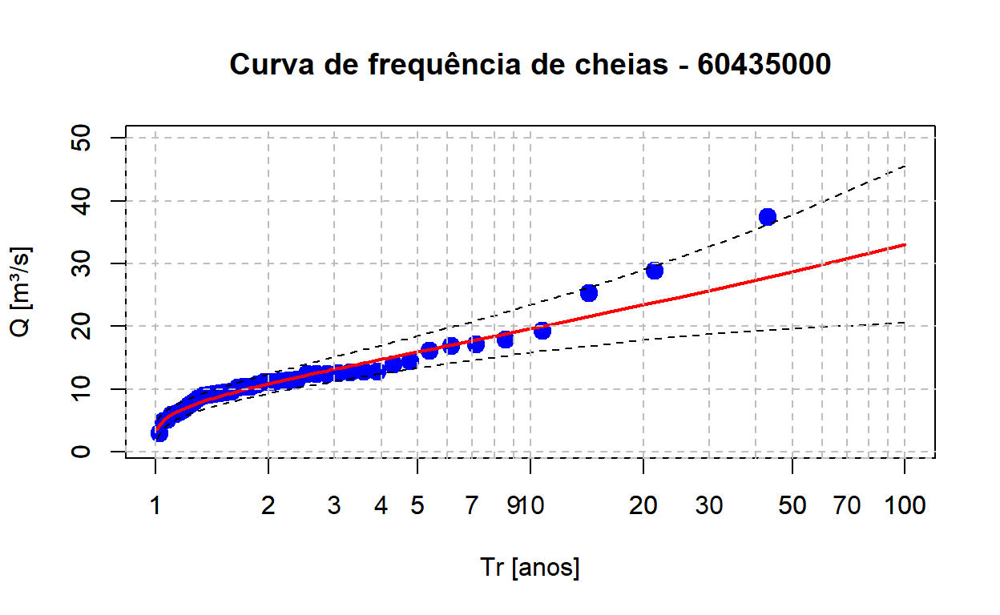

Exemplo de análise local com dados reais
O objetivo desta atividade é realizar uma análise de frequência de cheias a nível local. Isso significa que iremos relacionar a magnitude das vazões máximas anuais com a probabilidade da mesma ser excedida. A análise a nível local siginifca que utilizaremos apenas as informações de vazão observadas na estação fluviométrica de interesse, sem fazer uso de informações sobre as vazões máximas anuais que teham acontecido em outras estações fluviométricas localizadas na região.
Além de construirmos a relação entre a magnitude das vazões máximas anuais e a respectiva probabilidade de excedência, é importante saber estimar também o grau de incerteza nessas estimativas. Essas incertezas são usualmente representadas por intervalos de confiança, como veremos mais adianate.
Além de calcular essas quantidades, a curva de frequência, e suas respectivas incertezas, são representadas graficamente, como na figura abaixo, que mostra os resultados para um estudo de cheias numa seção do Rio Salado, localizada na província de Santa Fé, na Argentina, onde em 2003 ocorreu o rompimento de um dique que resultou em perde de vidas humanas e elevados prejuízos. Nesse caso, utilizou-se a distribuição Generalizada de Valores Extremos (GEV), mas aqui no curso faremos uso de uma distribuição mais simples de se trabalhar, a lognormal. O objetivo aqui é ter uma motivação hidrológica para apreder a usar a linguagem R.
Contruiremos aqui no curso uma figura semelhante a esta, onde no eixo-x temos o tempo de recorrência e no eixo-y a magnitude das vazões máximas anuais. O tempo de recorrência apresentado no eixo-x é uma maneira de representar a probabilidade de excedência. A linha cheia em vermelho representa o valor esperado dos valores da vazão máxima anual em função do tempo de recorrência, enquanto as linhas tracejadas representam os intervalos de confiança de 95%, ilustrando as incertezas envolvidas nessas estimativas. Os círculos azuis escuros representam as vazões máximas anuais registradas no passado, enquanto o círculo azul claro mostra a cheia destruidora de 2003.

(#fig:curva_freq)Curva de frequência do cheias do Rio Salado, na Argentina.
O primeiro passo de nossa atividade consiste em obter a série de máximos anuais que desejamos analisar. A obtenção da série de máximos anuais será realizada em duas etapas. Primeiro vamos obter a séries de vazões diárias, e para isso utilizaremos a mesma função de obtenção de séries diárias de vazão que aprendemos na segunda aula deste curso. Com a série de vazões diárias em mãos, passaremos para a segunda etapa, que é a de extrair a vazão máxima de cada ano hidrológico.
A função abaixo permite obter a série de vazões diárias de uma estação fluviométrica. O único argumento desta função é o código da estação. Quando chamamos esta função, ela retorna um dataframe com 3 colunas: o código da estação, a data, e o valor da vazão diária.
Como já estudamos esta função anteriormente, a uitlizaremos aqui sem entrar em qualqer detalhes sobre seu funcionamento.
# Função para obter série histórica de vazão de uma determinada estação ####
dados_serie_ANA <- function(cod_estacao = NA,
data_inicio = "01/01/1800",
data_fim = Sys.Date(),
tipo_dados = 3,
nivel_consist = 1){
# Pegar dados a partir do url e transformar em um dataframe
url_base <-
paste0("http://telemetriaws1.ana.gov.br/ServiceANA.asmx/",
"HidroSerieHistorica?",
"codEstacao=", cod_estacao,
"&dataInicio=", data_inicio,
"&dataFim=", data_fim,
"&tipoDados=", tipo_dados,
"&nivelConsistencia=", nivel_consist)
url_parse <- XML::xmlParse(url_base, encoding = "UTF-8")
node_doc <- XML::getNodeSet(url_parse, "//SerieHistorica")
dados_estacao <- XML::xmlToDataFrame(nodes = node_doc)
# Por algum motivo o hidroweb não está filtrando os dados pela consistencia
dados_estacao <- filter(dados_estacao, NivelConsistencia == nivel_consist)
# Separar data e hora
dados_estacao$Data <- as.Date(substr(dados_estacao$DataHora, 1, 10))
dados_estacao$Hora <- substr(dados_estacao$DataHora, 12, 19)
# Fazer um dataframe só com datas e valores de vazão
datas_dia <- seq.Date(from = min(dados_estacao$Data),
to = max(dados_estacao$Data) %m+% months(1) - 1,
by = "day")
tabela_final <- data.frame(Cod_estacao = dados_estacao$EstacaoCodigo[1],
Data = as.character(datas_dia),
Vazao = as.numeric(NA))
for(i in 1:nrow(tabela_final)){
# Dia em análise
dia <- as.numeric(substr(tabela_final$Data[i], 9, 10))
# Mês e ano em análise
mes_ano <- as.Date(paste0(substr(tabela_final$Data[i], 1, 8), "01"))
# Olhar a linha do mes e ano e escolher a coluna pelo dia + 15
linha_dado <- which(dados_estacao$Data == mes_ano)
# Se não tiver o mês nos dados da estação, colocar valor NA
ifelse(length(linha_dado) == 0,
tabela_final$Vazao[i] <- NA,
tabela_final$Vazao[i] <-
as.numeric(dados_estacao[linha_dado, (dia + 15)]))
}
return(tabela_final)
}Precisamos escolher uma estação fluviométrica para realizar nossa análise. Sugiro utilizar a estação 60435000, localizada na bacia do Rio Descoberto, que drena uma área de 113.2 km\(^2\), mas vocês têm a indepedência de escolhar qualquer outras estação que esteja no banco de dados da Agência Nacional de Águas.
Para obter a série diária da estação escolhida, basta chamar a função acima passando o argumento necessário, que é simplesmente o código da estação desejada. A função devolve um dataframe com a série de vazões médias diárias.
Para fins de visualização, utilizamos a função head(nome_do_dataframe)
do R, como mostrado abaixo, que nos mostra as primeiras 6 linhas do
dataframe.
# dados_60435000 <- dados_serie_ANA(cod_estacao = 60435000)
dados_60435000 <- read.table(file = "dados/60435000.txt",
sep = "\t",
dec = ".",
header = TRUE,
fileEncoding = "UTF-8")
index_falha_diario <- which(is.na(dados_60435000[, 3] == TRUE))
dias_falha <- dados_60435000[index_falha_diario, 2:3]
head(dados_60435000) Cod_estacao Data Vazao
1 60435000 1978-05-01 NA
2 60435000 1978-05-02 NA
3 60435000 1978-05-03 NA
4 60435000 1978-05-04 NA
5 60435000 1978-05-05 NA
6 60435000 1978-05-06 NAAlém disso, é sempre importante visualizar os dados para que se teha uma ideia geral da faixa de variação das vazões, sazonalidade e outras padrões que possa ser percebidos num gráfico.
Aqui, nós plotaremos a série completa das vazões diárias da estação
60435000 utilizando o código abaixo, que emprega o chamado R-base,
ao invés de pacote ggplot2, visto na aula anterior. Mas se preferir
utilizar o ggplot2 para realizar esta plotagem, fique à vontade.
time <- as.Date(dados_60435000$Data)
plot(time,dados_60435000$Vazao,type = "l",
main = "Vazões diárias - estação 60435000",
xlab = "Anos",ylab = "Q (m³/s)")
# Adiciona grid horizontal apenas
grid(nx = NA, ny = NULL,
lty = 2, # Grid line type
col = "gray", # Grid line color
lwd = 2) # Grid line width
Com a série de vazões diárias, passamos ao segundo passo que é o de construir a série de máximos anuais com base no ano hidrológico. Para isso, utilizaremos uma outra função, que é apresentada abaixo. Veja que a função tem como default o ano hidrológico com início no mês de agosto. Mas o mês de início do ano hidrológico pode ser facilmente alterado, bastando aicionar esse argumento quando chamar a função.
# Contrução da série de máximos anuais a partir de um ano hidrológico ####
fun_max_ano <- function(tabela = NA,
comeco_ano_hidro = 8){
# Transformar a coluna Data em "Dates" (caso esteja em character)
tabela$Data <- as.Date(tabela$Data)
# Definir se o mês em questão entra no ano atual ou no próximo ano
desloc_ano <- ifelse(month(tabela$Data) < comeco_ano_hidro, 0, 1)
# Ano Hidro
tabela$ano_hidro <- year(tabela$Data) + desloc_ano
# Fazer uma tabela final apenas com os máximos anuais
max_anuais <-
tabela %>%
group_by(Cod_estacao, ano_hidro) %>%
summarise(maxima = max(Vazao))
}Para finalmente obtermos a série de máximos anuais, basta chamar a
função fornecendo o arquivo que contém as séries diárias de vazão, que
no nosso caso é o dados_60435000. Mais uma vez, podemos utilizar a
função head para dar uma leve espiada nas informoações contidas no
dataframe.
Q_max <- fun_max_ano(dados_60435000)
head(Q_max)# A tibble: 6 × 3
# Groups: Cod_estacao [1]
Cod_estacao ano_hidro maxima
<int> <dbl> <dbl>
1 60435000 1978 NA
2 60435000 1979 16.1
3 60435000 1980 28.9
4 60435000 1981 11.1
5 60435000 1982 12.8
6 60435000 1983 25.3A função fun_max_ano foi escrita de forma que qualquer falha na série
de vazões diárias num dado ano hidrológico resulta numa falha na série
de máximos anuais. Isso nem semrpe é necessário, já que falhas no
período de estiagem não indicam falhas nas séries de máximos, mas creio
que a função nos serve bem para este curso.
Podemos notar a presença de um NA na nossa plotagem acima. É
interessante verificar o número total de anos disponíveis com dados
diários de vazão, bem como o número de anos com falha na série de
máximos anuais.
O número de anos com dados de vazões diárias pode ser obtidos
simplemente identificando o número de linhas no dataframe Q_max, e
para isso utilizamos o código abaixo,
n_anos <- nrow(Q_max)
n_anos[1] 45Mas já sabemos que o ano de 1978 não contém o valor de vazão máxima
porque a série de vazões diárias não estava completa. Será que há outros
anos no histórico com esse problema? Para identificar se há falha em
outros anos, utilizaremos duas funções do R de forma conjunta,
is.na e which. A função is.na identifica se o elemento é um NA
ou não, retornando um valor lógico, TRUE ou FALSE, enquanto a função
which permite identificar a posição de uma dada condição. O código
abaixo permite identificar em quais anos ocorrem falhas na série de
máximos anuais,
# A tibble: 3 × 2
ano_hidro maxima
<dbl> <dbl>
1 1978 NA
2 2009 NA
3 2020 NAA primeira linha de código identifica as posições em que há a presença
de NA na terceira coluna do dataframe, que é a coluna com as
informações sobre as vazões máximas de cada ano hidrológico, e associa à
variável index. Na linha seguinte, criamos um novo dataframe com a
informação dos anos em que temos falhas nos dados.
É verdade que poderíamos ter escrito o código acima de uma forma mais compacta, porém ficaria mais difícil de entender. Veja o que você acha.
# A tibble: 3 × 2
ano_hidro maxima
<dbl> <dbl>
1 1978 NA
2 2009 NA
3 2020 NAMais à frente, quando tivermos que fazer os cálculos necessários para realizar a análise de frequência, teremos que nos livrar desses anos com falhas. Mas por enquanto, vamos deixá-los como estão, e passemos `a etapa seguinte que é a de visualizar a série de máximos anuais.
Agora já podemos visualizar a série de máximos anuais que serivirão de
base para a nossa análise de frequência. Essa visualização pode ser
feita com o código abaixo, que utiliza apenas o R-base. Mais uma vex,
se desejar utilizar o ggplot2 para essa plotagem, fique à vontade.
plot(Q_max$ano_hidro,Q_max$maxima,type = "o",
main = "Máximos anuais - 60435000",
xlab = "Anos",ylab = "Q_max (m3/s)",lwd = 2)
# Adiciona grid
grid(nx = NULL, ny = NULL,
lty = 2, # Grid line type
col = "gray", # Grid line color
lwd = 1) # Grid line width
Para que possamos plotar os círculos azuis escuros da Figura apresentada anteriormente, para o caso do Rio Salado, que representam as vazões máximas anuais observadas na série histórica, precisamos determinar as chamadas posição de plotagem, que servirão de base para o cálculo do tempo de recorrência empírico para cada valor de vazão da amostra.
Para que seja possível entender esta etapa, vale a pena investir um certo tempo do curso em alguns conceitos básicos.
O tempo de recorrência associado a uma determinada magnitude de vazão, \(T_r(q)\), é um conceito hidrológico bastante conhecido, de forma que não dedicaremos muito tempo para discutí-lo aqui. Por definição, o tempo de recorrência de um evento, cuja magnitude vale \(q\), é igual ao inverso da probabilidade da vazão máxima anual exceder esse valor,
\[T_r(q) = \frac{1}{P(Q>q)}\]
Por exemplo, se a probabilidade da vazão máxima anual ultrapassar um dado valor \(q\) for igual a 0.10, dizemos que o tempo de recorrência dessa vazão \(q\) é de 10 anos. Da mesma forma, se \(P(Q>q)=0.01\), dizemos que o tempo de recorrência de \(q\) vale 100 anos.
Portanto, para que possamos incluir as vazões observadas na nossa curva de frequência, será preciso determinar a probabilidade de excedência de cada uma das observações contidas na série de vazões máximas anuais da localidade de interesse. Como o intuito neste primeiro momento é plotar as vazões observadas na curva de frequência, nos basearemos na chamada distribuição empírica de frequência.
A distribuição empírica de frequência relaciona cada valor de vazão máxima observada na série histórica, denominada aqui de \(q_i\), com sua frequência relativa acumulada, \(\hat{F}_Q(q_i)\). A quantidade \(\hat{F}_Q(q_i)\) representa a nossa estimativa para a probabilidade da variável de interesse, \(Q\), ser menor ou igual ao valor amostral, \(q_i\),
\[\hat{F}_Q(q_i) = \hat{P}(Q \le q_i)\]
em que \(\hat{F}_Q\) é a estimativa da frequência relativa acumulada da variável aleatória \(Q\) baseada na amostra, enquanto \(q_i\) representa o valor de uma dada observação \(i\). O uso do acento circunflexo na equação acima é uma convenção utilizada em estatística para mostrar que estamos nos referindo a uma estimativa da grandeza em questão baseada na amostra que se tem em mãos.
Já dissemos acima que o tempo de recorrência \(T_r(q)\) é função da probabilidade de excedência, que por sua vez pode ser interpretada como o complemento de \(F_Q(q_i)\). Dessa forma, podemos dizer que
\[\hat{P}(Q \gt q_i) = 1 - \hat{P}(Q \le q_i)\] de forma que
\[\hat{T}_r(q_i) = \frac{1}{1-\hat{P}(Q \le q_i)}\]
Pode parecer estranho se você estiver vendo isso pela primeira vez, mas a verdade é que há diferentes maneiras de se estimar a distribuição empírica de frequência das observações de uma amostra, \(\hat{P}(Q\le q_i)\), ou seu complemento, \(\hat{P}(Q\gt q_i)\).
Uma maneira bem comum de estimar tais probabilidades, quando se tem uma amostra de tamanho \(n\), consiste em ordenar a série em ordem decrescente e determinar a probabilidade de excedência utilizando a seguinte fórmula,
\[\hat{P}(Q > q_{(i)}) = 1 - \hat{F}_Q(q_{(i)}) = \frac{i}{n+1}\]
em que \(q_{(i)}\) representa a chamada estatística de ordem \(i\), em que \(q_{(1)}\gt q_{(2)}\gt \ldots \gt q_{(n)}\) representa a série ordenada das vazões máximas anuais, de forma que \(q_{(1)}\) e \(q_{(n)}\) são, respectivamente, a maior e a menor observações da amostra. De acordo com essa expressão, por exemplo, numa amostra de tamanho 49, a probabilidade da vazão máxima anual ser maior do que a maior observação da amostra vale \(P(Q>q_{(1)})=0.02\)), o que resulta num tempo de recorrência de \(T_r(q_{(1)})=50\) anos.
Não se preocupe tanto se esse conceito de posição de plotagem não ficou totalmente claro. Basta saber que plotaremos os valores de máximos anuais da amostra na curva de frequência utilizando a posição de plotagem de Weibull, que é o nome que se dá à posição de plotagem \(i/(n+1)\).
Na verdade, utilizaremos o tempo de recorrência, \(T_r\), para plotagem, lembrando que o \(T_r\) é simplemenste o inverso da probabilidade de excedência, representada pela posição de plotagem de Weibull.
O código para o cálculo do \(Tr\) é apresentado abaixo. Para facilitar a compreenção de como o cálculo é feito, criaram-se três novas colunas ao dataframe que contém as vazões máximas anuais. Mas antes disso, efetuou-se o ordenamento das vazões máximas em ordem decrescente, ou seja, o primeiro valor de vazão da nova série ordenada é o maior da amostra.
As três novas colunas são, respectivamente, o índice das vazões, começando de 1 indo até o número total de valores, a posição de plotagem de Weilbull, que expressa a probabilidade de excedência, e por último o tempo de recorrência, \(Tr\).
# Remoção dos anos com falha
Q_max <- na.omit(Q_max)
# Ordenamento decrescente do dataframe
Q_max_ord <- Q_max[order(Q_max$maxima, decreasing = TRUE), ]
# Inclusão de Três novas colunas: index, posição de plotagem de Weibull, e Tr
Q_max_ord$index <- seq(from = 1,to = nrow(Q_max_ord))
Q_max_ord$weibull <- Q_max_ord$index/(nrow(Q_max_ord) + 1)
Q_max_ord$Tr <- 1/Q_max_ord$weibullComo já fizemos antes, podemos dar uma espiada nesse novo dataframe com
as vazões máximas anuais ordenada utilizando a função
head(dataframe_name),
head(Q_max_ord)# A tibble: 6 × 6
# Groups: Cod_estacao [1]
Cod_estacao ano_hidro maxima index weibull Tr
<int> <dbl> <dbl> <int> <dbl> <dbl>
1 60435000 2004 37.5 1 0.0233 43
2 60435000 1980 28.9 2 0.0465 21.5
3 60435000 1983 25.3 3 0.0698 14.3
4 60435000 1994 19.3 4 0.0930 10.8
5 60435000 2016 17.8 5 0.116 8.6
6 60435000 1988 17.1 6 0.140 7.17A última coluna de Q_max_ord contém o valor do tempo de recorrência de
cada uma das observações contidas na amostra. Vale notar que as
observações em Q_max_ord estão ordenadas em ordem decrescente.
Podemos agora criar uma Figura, similar àquela apresentada para o estudo do Rio Salado. Porém, nesta etapa de nossa análise, apenas os valores amostrais das vazões máximas serão apresentados.
plot(Q_max_ord$Tr,Q_max_ord$maxima,type = "p", pch = 19,cex = 1.5,col = "blue",
log = "x",main = "Curva de frequência de cheias - 60435000",
xlab = "Tr (anos)",ylab = "Q_max (m3/s)",
xlim = c(1, 100), # X-axis limits
ylim = c(1, 50))
# Adiciona grid horizontal
axis(1, at = c(seq(1,10,by=1),seq(10,100,by=10),seq(200,1000,by=100)),
tck = 1, lty = 2, col = "gray")
# Adiciona grid vertical
axis(2, tck = 1, lty = 2, col = "gray")
Estudos que realizam de análise de frequência de cheias geralmente utilizam as seguintes distribuições teóricas de probabilidade:
Como o intuito aqui não é o de se aprofundar nos detalhes técnicos de análise de frequência, o que exigiria um número muito maior de horas de aula, mas de ter uma motivação maior para aprender a linguagem R, vamos realizar nossa análise de frequência de cheias com a distribuição GEV utilizando o método da máxima verossimilhança.
A distribuição Generalizada de Valores Extremos (GEV) surge da Teoria de Valores Extremos, a qual diz que a distribuição de probabilidades do máximo (ou mínimo) de uma série \(Y = \max(X_1, X_2,...,X_m)\), à medida que \(m \rightarrow \infty\), converge para uma das três distribuições de Valores Extremos (EV) possíveis: EVI (distribuição de Gumbel), EVII (Fréchet), ou EVIII (Weibull).
Essas três distribuições foram unificadas em uma única família, a GEV, com três parâmetros – posição (\(\xi\)), escala (\(\alpha\)) e forma (\(\kappa\)) – dada por:
\[ F_Y(y) = \begin{cases} \exp\bigg\{ -\bigg[ 1 - \kappa\bigg( \frac{y - \xi}{\alpha} \bigg) \bigg]^{1/\kappa} \bigg\}, \quad \kappa \neq 0 \\ \exp\bigg[-\exp\bigg( \frac{y - \xi}{\alpha} \bigg) \bigg], \quad \quad \quad \quad \ \kappa = 0 \end{cases} \]
O parâmetro de forma determina qual das distribuições se ajustará aos dados. Quando \(\kappa = 0\), temos a distribuição de Gumbel, também chamada dupla exponencial. As outras duas formas são assumidas quando \(\kappa \neq 0\). \(\kappa < 0\), resulta na distribuição de Fréchet, com cauda pesada à direita e domínio em \(y > \xi + \alpha/\kappa\); enquanto que \(\kappa > 0\) resulta na distribuição de Weibull, com domínio em \(y < \xi + \alpha/\kappa\).
Uma vantagem interessante de se trabalhar com a GEV é a possibilidade de estimar seus quantis (\(y_p\)) de forma analítica. Considerando uma série de máximos \(Y\) e que \(F_Y\) é igual à probabilidade de não excedência – ou seja \(p = P(Y \leq y_p) = F_Y(y_p)\). Com \(T\) representando o tempo de retorno, igual ao inverso da probabilidade de excedência, a expressão do quantil \(y_p\) da GEV será:
\[ y_p = \begin{cases} \xi + \frac{\alpha}{\kappa}\big[ -(-\ln p)^\kappa \big], \quad \kappa \neq 0 \\ \xi - \alpha \ln(-\ln p), \quad \quad \quad \! \! \kappa = 0, \end{cases} \] sendo \(p = 1 - 1/T\).
Logo, a partir de um conjunto de parâmetros estimados (\(\hat \xi, \hat \alpha, \hat \kappa\)), a estimação do quantil para um tempo de retorno específico se torna simples,
\[ \hat y_p = \begin{cases} \hat \xi + \frac{\hat \alpha}{\hat \kappa}\big[ -(-\ln p)^\hat \kappa \big], \quad \kappa \neq 0 \\ \hat \xi - \hat \alpha \ln(-\ln p), \quad \quad \quad \! \! \kappa = 0, \end{cases} \]
.
No R, podemos criar uma função como a abaixo para calcular os quantis, que toma como argumentos um valor (ou vetor) de probabilidade de não excedência e um vetor com as estimativas dos parâmetros da GEV:
# Quantis para parâmetro de forma diferente de zero
fun.q.gev <- function(p, # probabilidade de não excedência
param # vetor c/ parâmetros c(xi, alpha, kappa)
){
# Extrair os valores do vetor 'param'
xi <- param[[1]]; alpha <- param[[2]]; kappa <- param[[3]]
# Quantil
yp <- xi + alpha/kappa*(1 - (-log(p))^kappa)
return(yp) # quantil explícito em função dos parâmetros
# e da probabilidade de não excedência
}
# Quantis para parâmetro de forma igual a zero
fun.q.gu <- function(p, # probabilidade de não excedência
param # vetor c/ parâmetros c(csi, alpha)
){
# Extrair os valores do vetor 'param'
xi <- param[[1]]; alpha <- param[[2]]
# Quantil
yp <- xi - alpha*log(-log(p))
return(yp) # quantil explícito em função dos parâmetros
# e da probabilidade de não excedência
}As funções fun.q.gev() e fun.q.gu() englobam os dois casos da
família GEV, a depender do valor de \(\kappa\), determinando o valor do
quantil yp para uma probabilidade de não excedência p e um conjunto
de estimativas armazenadas no vetor param. Supondo um conjunto
arbitrário de estimativas param <- c(100, 20, -0.1) com as quais
queremos calcular o quantil para 50 anos de tempo de retorno
p <- 1 - 1/50:
param0 <- c(20, 10, -0.1)
p <- 1 - 1/50
q.gev <- fun.q.gev(p = p, param = param0); q.gev[1] 67.72672q.gu <- fun.q.gu(p = p, param = param0); q.gu[1] 59.01939Mas, para que esses quantis sejam estimados, que é o que realmente queremos, precisamos antes ter em mãos um conjunto de estimativas dos parâmetros da distribuição. Isso requer a seleção de um método de estimação adequado. Alguns métdos são normalemente empregados para obter essas estimativas: o método dos momentos-L (L-MOM), o método da máxima verossimilhança, ou sua versão alternativa, denominada de máxima verosimilhança generalizada, e métodos Bayesianos. Para este curso, trataremos aqui somente do método da máxima verssimilhança.
O método da máxima verossimilhança se baseia, como o próprio nome diz, na função de verossimilhança. A função de verossimilhança representa a distribuição conjunta de se observar a amostra que se tem em mãos.
Imagine que tenhamos a seguinte amostra em mãos, \(\{y_1, y_2, \ldots,y_n\}\), em que as variáveis \(Y_i\) sejam independentes e possuam a mesma distribuição de probabildades, representada por sua função densidade \(f_Y(y|\theta)\), cujos parâmetros estão dentro do vetor \(\theta\).
Como as variáveis que fazem parte da amostra possuem a mesma distribuição e são independentes, a distribuição conjunta que representa a amostra é dada pelo produtório abaixo,
\[ L(y_1, y_2, \ldots,y_n|\theta) = f_Y(y_1|\theta)\times f_Y(y_2|\theta) \times \ldots \times f_Y(y_n|\theta) = \prod_{i=1}^n f_Y(y_i|\theta) \] Vale notar que as observações da amostra \(\{y_1, y_2, \ldots,y_n\}\) são fixas, de modo que o valor da função verossimilhança depende da distribuição de probabilidades \(f_Y(y|\theta)\) e dos valores de seus respectivos parâmetros \(\theta\).
Se as variáveis \(Y_i\) forem discretas, \(L(y_1, y_2, \ldots,y_n|\theta)\) representa a probabilidade de se observar a amostra que foi realmente observada, desde que ela realmente tenha sido gerada a partir da distribuição \(f_Y(y_i|\theta)\). Quando essas variáveis são contínuas, que é caso das séries de vazões máximas anuais, o valor da função verossimilhança é apenas proporcional à probabilidade de se observar amostra. Mas essa proporcionalidade, ao invés da igualdade, não impede a conclusão de que um dado conjunto de parêmteros \(\theta_1\) pode resultar numa probabilidade maior de observar a amostra que se tem em mãos do que um outro conjunto de parâmetros \(\theta_2\), e é exatamente esse fato que que justifica a lógica do método.
A lógica do método está em identificar o conjunto de parâmetros de uma dada distribuição previamente selecioanada que maximize a probabilidade de se observar amostra que foi de fato observada. Assume-se que a amostra observada é bastante provável, e foi exatamente por isso que ela foi observada.
Com essa ideia em mente, fica fácil compreender o porquê que o método da máxima verossimilhança busca encontrar o conjunto de parâmetros da distribuição selecionada que maximiza a função verossimilhança,
\[ \hat \theta = \underset{\theta \in \Theta}{arg} \; max\; L(y_1,y_2,\ldots,y_n|\theta) \] pois deseja-se selecionar os valores de \(\theta\) que tornem a amostra a mais provável possível.
considerarmos que estamos partindo de um conjunto \(Y = (y_1, y_2,..., y_n)\) de observações independentes e igualmente distribuídas, a função de verossimilhança, sendo \(Y\) uma variável aleatória contínua, será proporcional à função densidade conjunta das observações \(f_Y(y_1,y_2,...,y_n|\theta)\) – sendo \(\theta\) um conjunto de 1 ou mais parâmetros da distribuição \(f_Y\). A hipótese de independência faz com que possamos considerar que essa densidade conjunta seja simplesmente o produtório da função densidade avaliada em cada uma das observações de \(Y\), ou seja \(f_Y(y_1,y_2,...,y_n|\theta) = f_Y(y_1|\theta) \cdot f_Y(y_2|\theta) \cdot ... \cdot f_Y(y_n|\theta)\), que pode ser interpretado como a probabilidade de se ter observado determinada amostra. Partindo disso, podemos definir a função de verossimilhança como:
\[ L(y|\theta) = \prod_{i=1}^n f_Y(y_i|\theta). \]
Assim, como o próprio nome diz, o método da máxima verossimilhança consiste em maximizar a função de verossimilhança \(L(y|\theta)\), obtendo o conjunto de parâmetros \(\hat \theta\) que resulta nesse máximo. Esse processo de otimização é, em muitos casos, baseado em algum algoritmo de gradiente (como Newton-Raphson) e uma transformação que facilita a convergência desses algoritmos é tirar o logaritmo da função – sendo log uma função monotônica, essa transformação afeta somente o valor do máximo, mas não o valor de \(\hat \theta\). Então, para a GEV, podemos definir a log-verossimilhança como:
\[ \ln[L(y|\xi, \alpha, \kappa)] = - n\ln(\alpha) + \sum_{i=1}^n\bigg[ \bigg(\frac{1}{\kappa} - 1\bigg) \cdot\ln(z_i) - z_i^{1/\kappa} \bigg], \]em que \(z_i = 1 - \kappa/\alpha \cdot (y_i - \xi)\).
Agora com a teoria fora do caminho, vamos para a prática. Resumindo o processo acima devemos ter em mãos:
Q_max;Vamos dividir nossa função de estimação dos parâmetros em duas. A primeira função será a nossa função de log-verossimilhança, encarregada simplesmente de retornar o valor de \(\ln[L(y|\xi, \alpha, \kappa)]\) para um conjunto de parâmetros e uma série de máximos anuais, enquanto a segunda empregará uma função de otimização para maximizar a primeira.
Nossa primeira função será bem completa. Vamos englobar as duas formas da GEV quando \(\kappa \neq 0\) e quando \(\kappa = 0\) e, para o primeiro caso, testaremos os limites teóricos da função, atribuindo um indicador de erro (geralmente um número muito alto que se destaque quando analisarmos os resultados) caso alguma observação da série de máximos anuais esteja fora do domínio. Adicionalmente, também testamos para parâmetros de escala positivos. Esses critérios ajudam a orientar o otimizador, estabelecendo limites para os parâmetros possíveis fazendo com que ele fuja desses limites.
# Estimador de Máxima Verossimilhança - GEV
fun.l.gev <- function(param, # vetor c/ os parâmetros, 1. csi 2. alpha, 3. kappa (ou somente 1 e 2)
y # vetor c/ a série AM observada
){
# Tamanho da série
n <- length(y)
# Dependendo do tamanho do vetor, escolher a distribuição
n.par <- length(param)
if(n.par == 3){ # GEV completa
# Extrair parâmetros
xi <- param[[1]]; alpha <- param[[2]]; kappa <- param[[3]]
# Avaliar kappa e domínio da função
if(kappa < 0){ # Testar se kappa é negativo (Fréchet)
# Testar limite inferior
if(min(y) < (xi + alpha/kappa)){
# Marcador de erro
ln.L <- 1e6
} else{
# Se estiver dentro do domínio, calcular a verossimilhança
ln.L <- -(- n*log(alpha) + sum((1/kappa - 1)*log(1 - kappa/alpha*(y - xi)) - (1 - kappa/alpha*(y - xi))^(1/kappa)))
}
} else{ # kappa positivo (Weibull)
# Testar limite superior
if(max(y) > (xi + alpha/kappa)){
ln.L <- 1e6
} else{
ln.L <- -(- n*log(alpha) + sum((1/kappa - 1)*log(1 - kappa/alpha*(y - xi)) - (1 - kappa/alpha*(y - xi))^(1/kappa)))
}
}
# Testar parâmetro de escala (deve ser maior que zero)
if(alpha < 0) ln.L <- 1e6
return(ln.L)
} else{
# Aqui avaliaremos quando kappa = 0 (ou seja, n.par == 2)
# Extrair parâmetros
xi <- param[[1]]; alpha <- param[[2]]
# Como a distribuição de Gumbel não possui limites, precisamos avaliar somente
# se o parâmetro de escala é positivo
if(alpha < 0){
ln.L <- 1e6
} else{
ln.L <- -(-n*log(alpha) - sum((y - xi)/alpha + exp(-(y - xi)/alpha)))
}
return(ln.L)
}
}Algo importante que precisa ser ressaltado é que colocamos o sinal negativo na frente da função de verossimilhança. Fizemos isso porque grande parte dos algoritmos de otimização trabalham com a minimização de uma função, então, no nosso caso, a minimização do negativo de uma função será sua maximização. É importante lembrar disso, pois adiante precisaremos inverter o sinal do máximo.
Vamos avaliar a função escrita com os mesmo parâmetros arbitrários que definimos anteriormente:
fun.l.gev(param = param0,
y = Q_max$maxima)[1] 171.6251fun.l.gev(param = param0[-3], # removendo o último elemento do vetor
y = Q_max$maxima)[1] 169.9711Para a maximização vamos usar uma função do R base, o optim(). Não
chegaremos a aplicar a função fun.l.gev() diretamente, mas
indiretamente. A aplicação função optim() é simples, exigindo os
seguintes argumentos:
par: um vetor com parâmetros que devem ser otimizados (nosso vetor
param);
fn: a função que desejamos otimizar (no nosso caso fun.l.gev); e
method: o método de otimização desejado (por padrão está definodo
como “Nelder-Mead”).
Adicionalmente, também passamos os outros argumentos necessários para a
função que definimos em fn. No caso da fun.l.gev(), precisaremos
passar y. Na Seção Descrição das incertezas, discutiremos ainda
como podemos quantificar as incertezas na estimativa do nosso conjunto
de parâmetros e nos quantis. A abordagem utiliza a matriz Hessiana do
processo de otimização (que explicaremos adiante) e, por esse motivo,
vamos passar para o optim() o argumento hessian = TRUE. Antes de
escrever uma nova função que já nos devolva o dado da forma que
queremos, vamos simplesmente analisar o funcionamento do optim().
max.l.gev <- optim(par = param0,
fn = fun.l.gev,
hessian = TRUE,
y = Q_max$maxima)
max.l.gev$par
[1] 9.35415208 4.08245016 -0.09834592
$value
[1] 127.563
$counts
function gradient
179 NA
$convergence
[1] 0
$message
NULL
$hessian
[,1] [,2] [,3]
[1,] 2.799222 -1.655545 -4.865333
[2,] -1.655545 4.775300 1.774381
[3,] -4.865333 1.774381 111.055670Vemos que a função nos retorna uma lista com um conjunto de objetos que
podem ser acessados de dentro da lista com $nome_objeto ou
[["nome_objeto"]]. Dentre os principais (aqueles que realmente estamos
interessados) estão $par, $value e $hessian, representando o
conjunto de parâmetros otimizados, o valor do nosso mínimo (que na
verdade é o negativo do máximo) e a matriz hessiana. Mas os demais
também são importantes. Se olharmos a documentação do optim(), veremos
que o objeto $convergence indica alguns possíveis erros que podem ter
ocorrido durante o processo de otimização. Uma convergência bem sucedida
apresentará convergence = 0, mas notamos que o nosso
max.l.gev$convergence foi igual a 0, ou seja,
o número de iterações não foi suficiente para atingir a convergência.
Por padrão, o número máximo de iterações para method = "Nelder-Mead" é
de 500, o que não foi suficiente, mas esse (além de muitos outros
parâmetros) podem ser alterados passando uma lista para o argumento
control. Vamos testar então control = list(maxit = 1000).
max.l.gev <- optim(par = param0,
fn = fun.l.gev,
hessian = TRUE,
control = list(maxit = 1000),
y = Q_max$maxima)
max.l.gev$par
[1] 9.35415208 4.08245016 -0.09834592
$value
[1] 127.563
$counts
function gradient
179 NA
$convergence
[1] 0
$message
NULL
$hessian
[,1] [,2] [,3]
[1,] 2.799222 -1.655545 -4.865333
[2,] -1.655545 4.775300 1.774381
[3,] -4.865333 1.774381 111.055670Perfeito! Definindo um maxit = 1000 já foi suficiente para garantir a
convergência da nossa otimização e agora que temos nosso conjunto final
de \(\hat \xi\), \(\hat \alpha\) e \(\hat \kappa\) podemos estimar nossos
quantis.
# Estimar quantis
param <- max.l.gev$par
p <- seq(from = 0.01, to = 0.99, by = 0.01) # quais probabilidades
tr <- 1/(1 - p) # tempos de retorno para cada p
qp <- fun.q.gev(p = p, param = param) # estimar quantis
# Organizar dados em um data.frame
df.quantis <- data.frame(tr = tr,
qp = qp)Podemos dar uma espiada no dataframe que contém os quantis de cheia
utilizando a função head(),
head(df.quantis) tr qp
1 1.010101 3.565128
2 1.020408 4.142827
3 1.030928 4.535558
4 1.041667 4.845765
5 1.052632 5.108134
6 1.063830 5.338968Podemos perceber que os seis primeiros valores dos quantis estimados não
são tão interessantes, pois eles estão associados a tempos de
recorrência muito baixos. Existe uma outra função no função no R que
permite espiar a parte final do dataframe, ao invés da parte inicial.
Essa função é chamada de tail().
tail(df.quantis, 5) tr qp
95 20.00000 23.43663
96 25.00000 24.69917
97 33.33333 26.36037
98 50.00000 28.77154
99 100.00000 33.10225O número 5 no código acima serve para especificar quantas linhas eu
estou interessado em ver.
Finalizamos esta parte da análise com a plotagem dos quantis de cheias estimados com base na distribuição GEV, comparando com as vazões observadas na série histórica da estação.
# Plotar as vazões observadas
plot(Q_max_ord$Tr, Q_max_ord$maxima, type = "p", pch = 19, cex = 1.5, col = "blue",
log = "x", main = "Curva de frequência de cheias - 60435000",
xlab = "Tr [anos]", ylab = "Q [m³/s]",
xlim = c(1, 100), ylim = c(1, 50))
# Adicionar quantis estimados com a GEV
lines(df.quantis$tr, df.quantis$qp,
col = "red",
lwd = 2)
# Adicionar linhas de grade horizontais
axis(1, at = c(seq(1, 10, 1), seq(10, 100 , 10), seq(200, 1000, 100)),
tck = 1, lty = 2, col = "gray")
# Adicionar linhas de grade verticais
axis(2, tck = 1, lty = 2, col = "gray")
Quando realizamos uma análise de frequência, além da estimativa dos quantis de cheia, precisamos ter uma ideia do quão confiantes estamos em relação aos valores estimados. Sendo assim, precisamos entender como calcular a precisão dessas estimativas.
Normalmente, a maneira que empregamos para descrever as incertezas nas estimativas dos quantis de cheias é por meio de intervalos de confiança. Neste nosso exercício aqui, aprenderemos como calcular intervalos de confiança associados à distribuição GEV, que é a distribuição que está sendo utilizada por nós para construir a curva de frequência.
Existem diferentes formas de se estimar esses intervalos. Aqui, vamos focar no Método Delta. Descrições mais detalhadas podem ser encontradas na literatura, como Coles, 2001.
Supondo o logaritmo de uma função de verossimilhança como a que definido como \(F_Y\), mas com um único parâmetro \(\theta\). Essa função pode ser aproximada por uma curva gaussiana, cujo pico está localizado no estimador de máxima verossimilhança \(\hat\theta_0\). A incerteza (ou a precisão) sobre a estimativa desse parâmetro está relacionada ao grau de curvatura da função de verossimilhança. A o grau de curvatura de uma função é descrito pela derivada segunda dessa função. Em outras palavras:
\[ \frac{d^2}{d\theta^2}\ln[L(y|\theta)] \propto \frac{1}{Var[\hat\theta]}, \] ou seja, quanto maior o grau de curvatuura, menor será a variância da estimativa.
Quando trabalhamos com uma distribuição de \(k\)-parâmetros, \(\ln[L(\theta)]\) pode ser aproximada por uma normal multivariada, cuja curvatura pode ser descrita por uma matriz quadrada \(k \times k\) chamada matriz de informação observada (ou matriz hessiana) $(). Para o nosso caso, com a GEV, \(\theta\) é um vetor com três parâmetros, então nossa matriz será uma matriz \(3 \times 3\):
\[ I(\xi, \alpha,\kappa) = \begin{bmatrix} -\frac{d^2}{d\xi^2}\ln(L) & -\frac{d^2}{d\xi\alpha}\ln(L) & -\frac{d^2}{d\xi\kappa}\ln(L) \\ -\frac{d^2}{d\alpha\xi}\ln(L) & -\frac{d^2}{d\alpha^2}\ln(L) & -\frac{d^2}{d\alpha\kappa}\ln(L) \\ -\frac{d^2}{d\kappa\xi}\ln(L) & -\frac{d^2}{d\kappa\alpha}\ln(L) & -\frac{d^2}{d\kappa^2}\ln(L) \\ \end{bmatrix}. \]
Seguindo a hipótese da normal multivariada, e chamando \(I(\theta)^{-1}\) de \(\psi_{i,j}\), podemos afirmar que \(\hat\theta_i \sim N(\theta_i, \psi_{i,i})\), de modo que para um intervalo de confiança estimado de \((1 - \alpha)\) para \(\theta_i\) – sendo \(\alpha\) aqui o nível de significância – será:
\[
\hat\theta_i \pm z_{\frac{\alpha}{2}}\sqrt{\psi_{i,i}},
\]
em que \(z_{\frac{\alpha}{2}}\) é o quantil \((1 - \alpha/2)\) da distribuição normal padrão. Ou seja, para estimar os intervalos de confiança dos parâmetros pela matriz hessiana, precisamos somente dos elementos da diagonal principal da nossa matriz max.l.gev$hessian invertida.
hess <- max.l.gev$hessian; hess [,1] [,2] [,3]
[1,] 2.799222 -1.655545 -4.865333
[2,] -1.655545 4.775300 1.774381
[3,] -4.865333 1.774381 111.055670No R, a inversão de matrizes pode ser feita com a função solve(). Essa inversa também é chamada de matriz de covariância (\(V\)).
cov <- solve(hess) # inverter a matriz hessiana
cov.diag <- diag(cov) # extrair os elementos da diagonal principal
cov.diag[1] 0.48505204 0.26424963 0.00977721Os elementos da diagonal principal da matriz de covariância cov.diag representam a variância estimada de cada um dos parâmetros, portanto, podemos facilmente estimar os limites dos intervalos de confiança para um dado nível de significância.
nivel.signf <- 0.05 # nível de significância
z <- qnorm(1 - nivel.signf/2) # quantil da normal padrão
# Montar data.frame c/ intervalos de confiança
df.ic.param <- data.frame(par = param,
var = cov.diag,
sd = sqrt(cov.diag),
ic.inf = param - z*sqrt(cov.diag),
ic.sup = param + z*sqrt(cov.diag))
df.ic.param par var sd ic.inf ic.sup
1 9.35415208 0.48505204 0.69645677 7.9891219 10.71918227
2 4.08245016 0.26424963 0.51405217 3.0749264 5.08997390
3 -0.09834592 0.00977721 0.09887977 -0.2921467 0.09545488A estimação da incerteza dos quantis segue da estimativa da incerteza nos parâmetros, mas o peso que cada parâmetro exerce na incerteza final do quantil não é a mesma. O método delta consiste em estimar a variância de um quantil calculado como sendo:
\[ \begin{gather} Var[y_p] = \nabla_{y_p}^T \ V \ \nabla_{y_p}, \\ \nabla_{y_p} = \begin{bmatrix} \frac{\partial y_p}{\partial \xi} \\ \frac{\partial y_p}{\partial \alpha} \\ \frac{\partial y_p}{\partial \kappa} \\ \end{bmatrix}, \end{gather} \] sendo \(\nabla_{y_p}\) uma matriz de pesos, indicando a importancia que cada parâmetro tem na estimativa do quantil e \(\nabla_{y_p}^T\) é a transposta desse vetor.
O primeiro passo então seria calcular as derivadas parciais que compõem o vetor \(\nabla_{y_p}\). Como temos duas funções possíveis, vamos estruturar uma forma de calculá-las conferindo o comprimendo no nosso vetor de parâmetros partindo do vetor de probabilidadesp que definimos quando calculamos os quantis. Para ficar mais fácil, podemos juntar essas etapas em uma única função.
n.par <- length(param)
n.p <- length(p)
var.q <- rep(NA, n.p)
for(prob in seq_along(p)){
# Estimar um vetor vetor de pesos (grad.q) p/ cada probabilidade
if(n.par == 3){
xi <- param[[1]]; alpha <- param[[2]]; kappa <- param[[3]]
d.xi <- 1 # dq/dξ
d.alpha <- 1/kappa*(1 - (-log(p[prob]))^kappa) # dq/dα
aux <- -log(p[prob]) # simplificar dq/dκ
d.kappa <- -alpha/(kappa^2)*(1 - aux^kappa) - alpha/kappa*aux^kappa*log(aux) # dq/dκ
grad.q <- c(d.xi, d.alpha, d.kappa) # vetor gradiente (pesos)
} else{
xi <- param[[1]]; alpha <- param[[2]];
d.xi <- 1 # dq/dξ
d.alpha <- -log(-log(p[prob[]])) # dq/dα
grad.q <- c(d.xi, d.alpha) # vetor gradiente (pesos)
}
var.q[prob] <- t(grad.q) %*% cov %*% grad.q
}
# Com o vetor de variâncias preenchido, podemos calcular os demais
df.quantis <- df.quantis %>%
mutate(var = var.q,
sd = sqrt(var.q),
ic.inf = qp - z*sqrt(var.q),
ic.sup = qp + z*sqrt(var.q))Podemos terminar nossa figura da curva de frequência de cheias incluindo os intervalos de confiança estimados de 95%:
# Plotar as vazões observadas
plot(Q_max_ord$Tr, Q_max_ord$maxima, type = "p", pch = 19, cex = 1.5, col = "blue",
log = "x", main = "Curva de frequência de cheias - 60435000",
xlab = "Tr [anos]", ylab = "Q [m³/s]",
xlim = c(1, 100), ylim = c(1, 50))
# Adicionar quantis estimados com a GEV
lines(df.quantis$tr, df.quantis$qp,
col = "red",
lwd = 2)
# Adicionar linhas dos intervalos de confiança
lines(df.quantis$tr, df.quantis$ic.inf,
col = "black", lty = 2, lwd = 1.2)
lines(df.quantis$tr, df.quantis$ic.sup,
col = "black", lty = 2, lwd = 1.2)
# Adicionar linhas de grade horizontais
axis(1, at = c(seq(1, 10, 1), seq(10, 100 , 10), seq(200, 1000, 100)), tck = 1, lty = 2, col = "gray")
axis(2, tck = 1, lty = 2, col = "gray")
Vemos que apesar de vazões mais extremas terem ficado fora da curva de quantis estimados pela GEV, os valores ainda estão dentro do intervalo de confiança estimado.
Vamos listar tudo o que fizemos até agora: estimamos as posições de plotagem das vazões máximas anuais observadas; ajustamos nossa distribuição de interesse a essas vazões e obtivemos um conjunto de estimativas para seus parâmetros; definimos percentis para estimar nossos quantis; e plotamos uma curva de frequência para comparar a performance do nosso ajuste. Veja que fizemos isso em etapas individuais.
Quando trabalhamos somente com uma estação, um procedimento mais manual como fizemos acima pode ser parecer mais fácil, mas quando nossa região de estudo aumenta e com ela o número de estações para analisarmos, pode ser que essa análise como foi feita se torne muito manual e tome mais tempo. Muitas vezes vale a pena o esforço para estruturar um código completo que englobe todas as etapas da nossa análise em uma única função geral. É isso que faremos adiante. Houve uma alteração nos dados? Sem problema, basta rodar uma função. Nosso conjunto de análise aumentou? Tudo bem, a função é genérica e pode ser aplicada para séries diferentes facilmente.
Vamos começar. Nossa função deve receber como argumentos: 1) uma vetor com a série de máximos anuais/ 2) um vetor com parâmetros iniciais para serem otimizados; 3) um vetor com probabilidades para estimar os quantis.
Lembrando que já criamos algumas funções anteriormente que usaremos aqui novamente. Uma estratégia interessante para evitar que nossa função principal fique muito carregada e confusa é criar um script adicional e colocar nele todas as funções “auxiliares” e depois simplesmente chamá-las usando a função source() do R. Criaremos, então, um arquivo chamado “frequency_analysis_aux.R” e colaremos nossas funções fun.q.gev, fun.q.gu e fun.l.gev.
fun.fit.gev <- function(maximos, # vetor: série de máximos anuais
param, # vetor: parâmetros iniciais, length igual a 2 ou 3: 1. posição, 2. escala, 3. forma
probs, # vetor: probabilidades p/ estimar os quantis
aux.fun.path = getwd(), # caminho do diretório onde se encontra o script c/ funções auxiliares
aux.fun.name = "frequency_analysis_gev_aux.R", # nome do script c/ funções auxiliares
maxit = 1000, # número máximo de iterações 'optim()'
nivel.signf = 0.05 # nível de significância (padrão 5%)
){
# Checar classe dos parâmetros
if(!inherits(c(maximos, param, probs), "numeric")){
stop("Parâmetros 'maximos', 'param' e 'probs' devem ser vetores.")
}
# Checar parâmetros
n.par <- length(param)
if(!(n.par %in% c(2,3))){
stop("Vetor de parâmetros deve ter comprimento:
- 2 (parâmetro de forma igual a 0, Gumbel) ou;
- 3 (parâmetro de forma diferente de 0, Frechet e Weibull);
com parâmetros na ordem: 1. posição, 2. escala e 3. forma.")
}
# Chamar funções no script "frequency_analysis_aux.R"
aux.path <- paste(aux.fun.path, aux.fun.name, sep = "/")
if(!file.exists(aux.path)){
stop("O arquivo '", aux.fun.name, "' não existe no diretório informado em 'aux.fun.path'.")
}
source(aux.path) # chamar o script de funções auxiliares
# Encurtar nome das veriáveis
y <- maximos
par <- param
p <- probs
# Ajustar a GEV
max.l.gev <- optim(par = par,
fn = fun.l.gev,
hessian = TRUE,
y = y)
if(max.l.gev$convergence != 0){
message("Houve erros na convergência, checar $convergence.")
}
# Extrair resultados do ajuste
par <- max.l.gev$par
hess <- max.l.gev$hessian
# Estimar quantis
tr <- 1/(1 - p) # tempos de recorrência
if(n.par == 3){
qp <- fun.q.gev(p, par)
} else{
qp <- fun.q.gu(p, par)
}
# Incerteza nos parâmetros
cov <- solve(hess) # matriz de covariância
cov.diag <- diag(cov) # extrair diagonal principal
z <- qnorm(1 - nivel.signf/2) # quantil normal padrão
res.par <- data.frame(par = par, # parâmetros
var = cov.diag, # variância parâmetros
sd = sqrt(cov.diag), # desvio padrão parâmetros
ic.inf = param - z*sqrt(cov.diag), # limite inferior IC
ic.sup = param + z*sqrt(cov.diag)) # limite superior IC
# Incerteza nos quantis
n.p <- length(p) # número de quantis calculados
var.q <- rep(NA, n.p) # vetor vazio p/ armazenar variâncias
for(prob in seq_along(p)){
# Estimar um vetor vetor de pesos (grad.q) p/ cada probabilidade
if(n.par == 3){
xi <- param[[1]]; alpha <- param[[2]]; kappa <- param[[3]] # extrair parâmetros
d.xi <- 1 # dq/dξ
d.alpha <- 1/kappa*(1 - (-log(p[prob]))^kappa) # dq/dα
aux <- -log(p[prob]) # simplificart dq/dκ
d.kappa <- -alpha/(kappa^2)*(1 - aux^kappa) - alpha/kappa*aux^kappa*log(aux) # dq/dκ
grad.q <- c(d.xi, d.alpha, d.kappa) # vetor gradiente (pesos)
} else{
xi <- param[[1]]; alpha <- param[[2]]; # extrair parâmetros
d.xi <- 1 # dq/dξ
d.alpha <- -log(-log(p[prob])) # dq/dα
grad.q <- c(d.xi, d.alpha) # vetor gradiente (pesos)
}
var.q[prob] <- t(grad.q) %*% cov %*% grad.q
}
res.quantis <- data.frame(tr = tr,
qp = qp,
var = var.q,
sd = sqrt(var.q),
ic.inf = qp - z*sqrt(var.q),
ic.sup = qp + z*sqrt(var.q))
# Organizar resultados
return(list("parametros" = par,
"res.par" = res.par,
"res.quantis" = res.quantis))
}
teste <- fun.fit.gev(maximos = Q_max$maxima,
param = c(20, 10, -0.2),
probs = seq(0.01, 0.99, 0.01),
aux.fun.path = getwd(),
aux.fun.name = "frequency_analysis_gev_aux.R",
maxit = 1000,
nivel.signf = 0.05)If you see mistakes or want to suggest changes, please create an issue on the source repository.
Text and figures are licensed under Creative Commons Attribution CC BY 4.0. Source code is available at https://github.com/DirceuReis/Mini_Curso_UnB_SemUniv_AnaliseHidro_R, unless otherwise noted. The figures that have been reused from other sources don't fall under this license and can be recognized by a note in their caption: "Figure from ...".